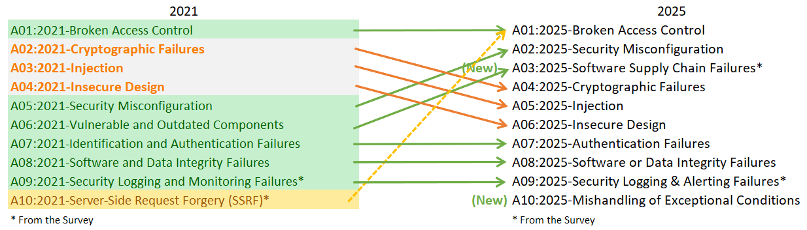

The Ten Most Critical Web Application Security Risks
Introduction
Welcome to the 8th installment of the OWASP Top Ten!
A huge thank you to everyone who contributed data and perspectives in the survey. Without you, this installment would not have been possible. THANK YOU!
Introducing the OWASP Top 10:2025
- A01:2025 - Broken Access Control
- A02:2025 - Security Misconfiguration
- A03:2025 - Software Supply Chain Failures
- A04:2025 - Cryptographic Failures
- A05:2025 - Injection
- A06:2025 - Insecure Design
- A07:2025 - Authentication Failures
- A08:2025 - Software or Data Integrity Failures
- A09:2025 - Security Logging & Alerting Failures
- A10:2025 - Mishandling of Exceptional Conditions
What's changed in the Top 10 for 2025
There are two new categories and one consolidation in the Top Ten for 2025. We’ve worked to maintain our focus on the root cause over the symptoms as much as possible. With the complexity of software engineering and software security, it’s basically impossible to create ten categories without some level of overlap.

- A01:2025 - Broken Access Control maintains its position at #1 as the most serious application security risk; the contributed data indicates that on average, 3.73% of applications tested had one or more of the 40 Common Weakness Enumerations (CWEs) in this category. As indicated by the dashed line in the above figure, Server-Side Request Forgery (SSRF) has been rolled into this category.
- A02:2025 - Security Misconfiguration moved up from #5 in 2021 to #2 in 2025. Misconfigurations are more prevalent in the data for this cycle. 3.00% of the applications tested had one or more of the 16 CWEs in this category. This is not surprising, as software engineering is continuing to increase the amount of an application’s behavior that is based on configurations.
- A03:2025 - Software Supply Chain Failures is an expansion of A06:2021-Vulnerable and Outdated Components to include a broader scope of compromises occurring within or across the entire ecosystem of software dependencies, build systems, and distribution infrastructure. This category was overwhelmingly voted a top concern in the community survey. This category has 5 CWEs and a limited presence in the collected data, but we believe this is due to challenges in testing and hope that testing catches up in this area. This category has the fewest occurrences in the data, but also the highest average exploit and impact scores from CVEs.
- A04:2025 - Cryptographic Failures falls two spots from #2 to #4 in the ranking. The contributed data indicates that, on average, 3.80% of applications have one or more of the 32 CWEs in this category. This category often leads to sensitive data exposure or system compromise.
- A05:2025 - Injection falls two spots from #3 to #5 in the ranking, maintaining its position relative to Cryptographic Failures and Insecure Design. Injection is one of the most tested categories, with the greatest number of CVEs associated with the 38 CWEs in this category. Injection includes a range of issues from Cross-site Scripting (high frequency/low impact) to SQL Injection (low frequency/high impact) vulnerabilities.
- A06:2025 - Insecure Design slides two spots from #4 to #6 in the ranking as Security Misconfiguration and Software Supply Chain Failures leapfrog it. This category was introduced in 2021, and we have seen noticeable improvements in the industry related to threat modeling and a greater emphasis on secure design.
- A07:2025 - Authentication Failures maintains its position at #7 with a slight name change (prevously it was “Identification and Authentication Failures") to more accurately reflect the 36 CWEs in this category. This category remains important, but the increased use of standardized frameworks for authentication appears to be having beneficial effects on the occurrences of authentication failures.
- A08:2025 - Software or Data Integrity Failures continues at #8 in the list. This category is focused on the failure to maintain trust boundaries and verify the integrity of software, code, and data artifacts at a lower level than Software Supply Chain Failures.
- A09:2025 - Security Logging & Alerting Failures retains its position at #9. This category has a slight name change (previously Security Logging and Monitoring Failures”) to emphasize the importance of the alerting functionality needed to induce appropriate action on relevant logging events. Great logging with no alerting is of minimal value in identifying security incidents. This category will always be underrepresented in the data, and was again voted into a position in the list from the community survey participants.
- A10:2025 - Mishandling of Exceptional Conditions is a new category for 2025. This category contains 24 CWEs focusing on improper error handling, logical errors, failing open, and other related scenarios stemming from abnormal conditions that systems may encounter.
Methodology
This installment of the Top Ten remains data-informed, but not blindly data-driven. We ranked 12 categories based on the data contributed, and allowed two to be promoted or highlighted by responses from the community survey. We do this for a fundamental reason: examining the contributed data is essentially looking into the past. Application Security researchers dedicate time to identifying new vulnerabilities and developing new testing methods. It takes weeks to years to integrate these tests into tools and processes. By the time we can reliably test a weakness at scale, years may have passed. There are also important risks that we may never be able to reliably test and be present in the data. To balance that view, we use a community survey to ask application security and development practitioners on the front lines what they see as essential risks that may be underrepresented in the testing data.
How the categories are structured
A few categories have changed from the previous installment of the OWASP Top Ten. Here is a high-level summary of the category changes.
In this iteration, we asked for data, with no restriction on CWEs like we did for the 2021 edition. We asked for the number of applications tested for a given year (starting in 2021), and the number of applications with at least one instance of a CWE found in testing. This format allows us to track how prevalent each CWE is within the population of applications. We ignore frequency for our purposes; while it may be necessary for other situations, it only hides the actual prevalence in the application population. Whether an application has four instances of a CWE or 4,000 instances is not part of the calculation for the Top Ten. Especially as manual testers tend to only list a vulnerability once no matter how many times it is repeated in an application, while automated testing frameworks list every instance of a vulnerability as unique. We went from approximately 30 CWEs in 2017, to almost 400 CWEs in 2021, to 589 CWEs in this edition to analyze in the dataset. We plan to do additional data analysis as a supplement in the future. This significant increase in the number of CWEs necessitates changes to how the categories are structured.
We spent several months grouping and categorizing CWEs and could have continued for additional months. We had to stop at some point. There are both root cause and symptom types of CWEs, where root cause types are like "Cryptographic Failure" and "Misconfiguration" contrasted to symptom types like "Sensitive Data Exposure" and "Denial of Service." We decided to focus on the root cause whenever possible as it's more logical for providing identification and remediation guidance. Focusing on the root cause over the symptom isn't a new concept; the Top Ten has been a mix of symptom and root cause. CWEs are also a mix of symptom and root cause; we are simply being more deliberate about calling it out. There is an average of 25 CWEs per category in this installment, with the lower bounds at 5 CWEs for A03:2025-Software Supply Chain Failures and A09:2025 Security Logging and Alerting Failures to 40 CWEs in A01:2025-Broken Access Control. We made the decision to cap the number of CWEs in a category to 40. This updated category structure offers additional training benefits as companies can focus on CWEs that make sense for a language/framework.
We have been asked why not shift to a list of 10 CWEs as a Top 10, similar to the MITRE Top 25 Most Dangerous Software Weaknesses. There are two primary reasons why we use multiple CWEs in categories. First, not all CWEs exist in all programming languages or frameworks. This causes issues for tooling and training/awareness programs as part of the Top Ten may not be applicable. The second reason is that there are multiple CWEs for common vulnerabilities. For example, there are multiple CWEs for general Injection, Command Injection, Cross-site Scripting, Hardcoded Passwords, Lack of Validation, Buffer Overflows, Cleartext Storage of Sensitive Information, and many others. Depending on the organization or tester, different CWEs might be used. By using a category with multiple CWEs we can help raise the baseline and awareness of the different types of weaknesses that may occur under a common category name. In this edition of the Top Ten 2025, there are 248 CWEs within the 10 categories. There are a total of 968 CWEs in the downloadable dictionary from MITRE at the time of this release.
How the data is used for selecting categories
Similar to what we did for the 2021 edition, we leveraged CVE data for Exploitability and (Technical) Impact. We downloaded OWASP Dependency Check and extracted the CVSS Exploit and Impact scores, grouping them by relevant CWEs listed with the CVEs. It took a fair bit of research and effort, as all the CVEs have CVSSv2 scores, but there are flaws in CVSSv2 that CVSSv3 should address. After a certain point in time, all CVEs are assigned a CVSSv3 score as well. Additionally, the scoring ranges and formulas were updated between CVSSv2 and CVSSv3.
In CVSSv2, both Exploit and (Technical) Impact could be up to 10.0, but the formula would knock them down to 60% for Exploit and 40% for Impact. In CVSSv3, the theoretical max was limited to 6.0 for Exploit and 4.0 for Impact. With the weighting considered, the Impact scoring shifted higher, almost a point and a half on average in CVSSv3, and exploitability moved nearly half a point lower on average.
There are approximately 175k records (up from 125k in 2021) of CVEs mapped to CWEs in the National Vulnerability Database (NVD), extracted from OWASP Dependency Check. Additionally, there are 643 unique CWEs mapped to CVEs (up from 241 in 2021). Within the nearly 220k CVEs that were extracted, 160k had CVSS v2 scores, 156k had CVSS v3 scores, and 6k had CVSS v4 scores. Many CVEs have multiple scores, which is why they total more than 220k.
For the Top Ten 2025, we calculated average exploit and impact scores in the following manner. We grouped all the CVEs with CVSS scores by CWE and weighted both exploit and impact scores by the percentage of the population that had CVSSv3, as well as the remaining population with CVSSv2 scores, to get an overall average. We mapped these averages to the CWEs in the dataset to use as Exploit and (Technical) Impact scoring for the other half of the risk equation.
Why not use CVSS v4.0, you may ask? That’s because the scoring algorithm was fundamentally changed, and it no longer easily provides the Exploit or Impact scores as CVSS v2 and CVSSv3 do. We will attempt to figure out a way to use CVSS v4.0 scoring for future versions of the Top Ten, but we were unable to determine a timely way to do so for the 2025 edition.
Why we use a community survey
The results in the data are largely limited to what the industry can test for in an automated fashion. Talk to a seasoned AppSec professional, and they will tell you about stuff they find and trends they see that aren't yet in the data. It takes time for people to develop testing methodologies for certain vulnerability types and then more time for those tests to be automated and run against a large population of applications. Everything we find is looking back in the past and might be missing trends from the last year, which are not present in the data.
Therefore, we only pick eight of the ten categories from the data because it's incomplete. The other two categories are from the Top 10 community survey. It allows the practitioners on the front lines to vote for what they see as the highest risks that might not be in the data (and may never be expressed in data).
Thank you to our data contributors
The following organizations (along with several anonymous donors) kindly donated data for over 2.8 millions applications to make this the largest and most comprehensive application security data set. Without you, this would not be possible.
- Accenture (Prague)
- Anonymous (multiple)
- Bugcrowd
- Contrast Security
- CryptoNet Labs
- Intuitor SoftTech Services
- Orca Security
- Probely
- Semgrep
- Sonar
- usd AG
- Veracode
- Wallarm
Lead Authors
- Andrew van der Stock - X: @vanderaj
- Brian Glas - X: @infosecdad
- Neil Smithline - X: @appsecneil
- Tanya Janca - X: @shehackspurple
- Torsten Gigler - Mastodon: @torsten_gigler@infosec.exchange
Log issues and pull requests
Please log any corrections or issues: